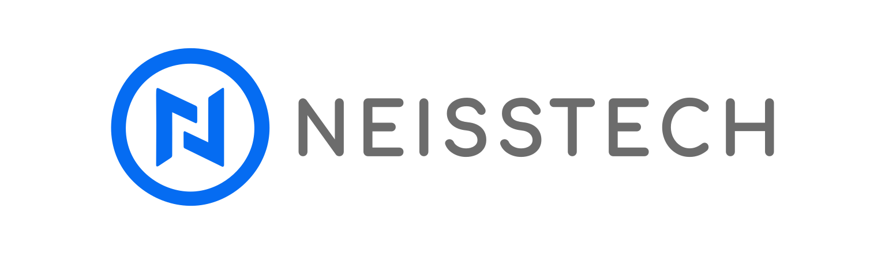
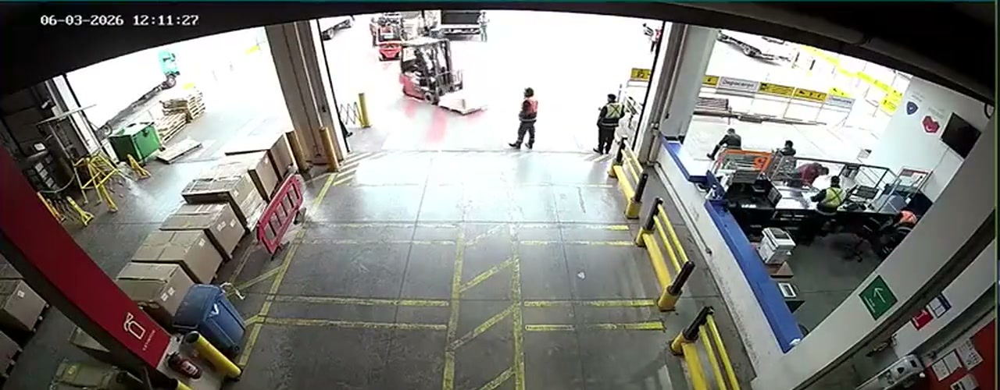

FILCE 2026IA aplicada a la seguridad:
pasa de lo correctivo a lo predictivo.
Bastián Osorio · Neisstech
¿Qué creen
que pasó?
que pasó?
Santiago · 07:55Un centro de distribución,
Un centro de distribución,
un día cualquiera.
Sala de reunión · 07:58
Este es Don Salva.
Operador muy experimentadoBrigadista de emergenciaMiembro del comité paritario
08:00 · Charla de seguridadComo todos los días,
Como todos los días,
a las 8 da la charla.
Días sin accidentesHoy celebran 1.000 días
Hoy celebran 1.000 días
sin accidentes.
08:30 · Término de charlaCada operador vuelve
Cada operador vuelve
a su puesto de trabajo.
Por senderos que
poco se ven.
Carga de baterías
Este es Alejandro.
Operador de montacargasPoco tiempo en la compañíaNo le interesa la seguridad
Se sube sin cinturón
y va a toda velocidad.
Quiere irse temprano:
hoy todo lo hace rápido.
Debe ir de espalda.
Los racksDon Salva decide
Don Salva decide
reportar un problema.
Quién les habla
Bastián Osorio
Gerente comercial y socio de
NeisstechTransformamos espacios logísticos en lugares seguros y eficientes.
HoyIA aplicada a la seguridad: pasando de lo correctivo a lo preventivo.
Costos de un accidente
Qué significa un accidente.
Lo que se ve a primera vista Costos directos Costos directos- Lesión del trabajador
- Atención y traslado
- Tratamiento y rehabilitación
- Aumento de la prima en seguros
Lo que no se ve Costos indirectos
Costos indirectos
- Interrupción de la operación
- Reemplazo del trabajador
- Menor productividad inicial
- Gestión administrativa
- Incumplimiento con clientes
- Daño a equipos e infraestructura
- Pérdida de productos
- Consecuencias legales o regulatorias
Grandes desafíos de seguridad.
01Personas y equipos móvilesInteracciones estrechas en espacios pequeños.
02Cobertura e inmediatezDificultad para detectar y actuar a tiempo.
03EstandarizaciónNormas y estándares poco claros o inexistentes.
04Rotación y culturaPérdida del conocimiento y de la cultura preventiva.
Marco normativo
Marco normativo
Marco normativo
de la prevención.
DS 594Condiciones básicas del lugar de trabajoFija las condiciones sanitarias y ambientales mínimas de todo lugar de trabajo: espacios, vías de circulación, condiciones generales de seguridad y protección personal.
DS 44Gestión preventiva de los riesgosObliga a identificar los peligros, evaluar los riesgos y controlarlos con un programa preventivo, priorizando las medidas más efectivas.
ISO 45001Sistema de gestión y jerarquía de controlesNorma internacional para gestionar la seguridad y salud en el trabajo: planificar, controlar y mejorar, de lo menos a lo más efectivo.
BSI PAS 13Guía internacionalBuenas prácticas para separar personas y vehículos en el lugar de trabajo: rutas, cruces y barreras de seguridad.
De lo menos a lo más efectivo.
Mitigación de riesgos
LúminaIA y visión artificial100 %Controles de ingeniería
Gestión de tráfico70 %Controles administrativos
Gestión visual30 %Gestión visual
Proyecto 5S.
De lo menos a lo más efectivo.
Mitigación de riesgos
LúminaIA y visión artificial100 %Controles de ingeniería
Gestión de tráfico70 %Controles administrativos
Gestión visual30 %Gestión de tráfico
Proyecto cruce inteligente.
De lo menos a lo más efectivo.
Mitigación de riesgos
LúminaIA y visión artificial100 %Controles de ingeniería
Gestión de tráfico70 %Controles administrativos
Gestión visual30 %Hacemos visible
lo que hoy pasa inadvertido.
Eso es
El desafío
Tus cámaras lo graban todo. Pero nadie lo está mirando.
01REC · CAM 01Patio de obraLúmina · sin casco
02REC · CAM 02Zona de despachoLúmina · grúa y peatón
03REC · CAM 03BodegaLúmina · en orden
04REC · CAM 04Zona de cargaLúmina · zona restringida
Cómo funciona el sistema.
01
La cámara ve el riesgo
Una grúa en retroceso y una persona por cruzar.
02
Lúmina lo entiende y actúa
El cruce se cierra, la baliza se enciende y la grúa frena.
03
Avisa al jefe de planta
Le llega al celular, con el video, esté donde esté.
04
Lo corrige en terreno
Va al punto exacto con el video en la mano.
- Ve
- Actúa
- Avisa
- Se corrige
Privacidad · uso responsable de cámaras e IA
Ley de protección de datos.
Los datos personales, incluidas las imágenes de las personas, solo pueden tratarse con un fin lícito, específico e informado, en la medida justa y con medidas de seguridad que los protejan.
Ley 21.719 de protección de datos personales · Chile
Riesgo Rostros pixelados · la persona no es el foco, el riesgo sí✓
Para la seguridad: síCámaras e IA para prevenir riesgos y proteger a las personas.
✕
Para vigilar el rendimiento: noLas cámaras no son para controlar la productividad de las personas.
Video del caso PucargoPor incorporar · recursos/clips/pucargo.mp4
Analítica y reportabilidadProyecto cámaras con IA
Proyecto cámaras con IA
+ gestión de tráfico.
La gestión visual genera las bases, la gestión de tráfico evita los errores y la analítica con IA nos ayuda a entender mejor el problema.
La misma mañana · 08:46Volvamos
Volvamos
a la historia.
Pilar 1 · Gestión visualSenderos y cruces
Senderos y cruces
demarcados.
Pilar 2 · Gestión de tráficoEl cruce se cierra
El cruce se cierra
cuando pasa una grúa.
Pilar 3 · LúminaDetecta el riesgo y
Detecta el riesgo y
activa una respuesta.
Neisstech + LúminaTodas las soluciones,
Todas las soluciones,
funcionando.
- SmartDock el camión queda fijo en el andén
- Safety Gate avisa antes del golpe en altura
- X-KIUB proyecta el cruce y avisa
- Lúmina registra los eventos de la planta
Al día siguiente · 08:001.001 días
1.001 días
sin accidentes.
Muchas gracias.
¿Preguntas?
Bastián Osorio · neisstech.com

FILCE 2026